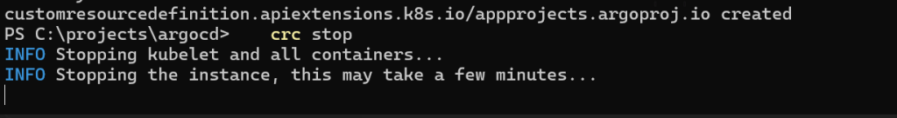
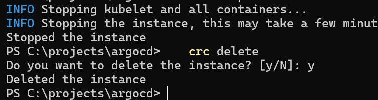
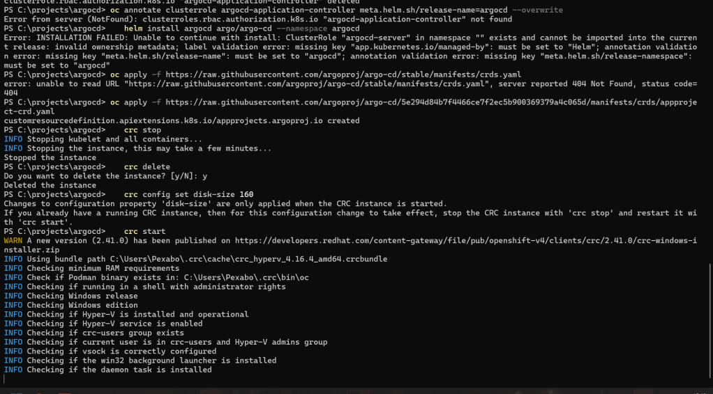
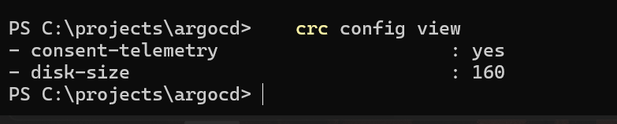
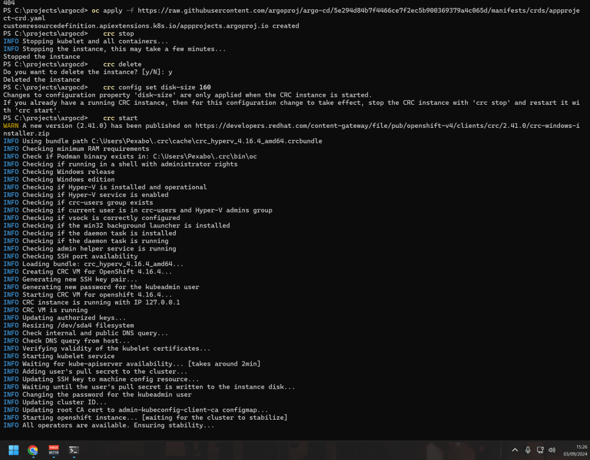

How to Increase the Disk Size of CodeReady Containers (CRC) to 160GB
If you're using CodeReady Containers (CRC) for local development with OpenShift, you might encounter scenarios where the default disk size isn't sufficient for your needs. For instance, when deploying multiple applications, testing stateful workloads, or using large datasets, the default disk allocation might fall short. Fortunately, CRC allows you to adjust the disk size to better suit your requirements. In this post, we'll walk through how to increase the disk size of CRC to 160GB.
Why Increase the Disk Size?
By default, CRC allocates a certain amount of disk space for the OpenShift environment. This default size is often suitable for basic development and testing but may not suffice for more extensive work such as:
-
Deploying multiple or large applications: Each application and its dependencies take up space.
-
Persistent Storage: Using Persistent Volume Claims (PVCs) for stateful applications requires additional disk space.
-
Data-Intensive Applications: Applications that process large datasets will quickly consume disk space.
To accommodate these use cases, increasing the CRC disk size is a practical solution.
Step-by-Step Guide to Increasing CRC Disk Size to 160GB
Here’s how you can increase the CRC disk size:
- Stop the CRC Cluster: Before making any changes, ensure the CRC instance is stopped.
crc stop

- Increase Disk Size: To adjust the disk size, use the
crc config setcommand. This step changes the virtual disk size that CRC will allocate.
crc config set disk-size 160
-
Note: This command sets the disk size to 160GB. The size is specified in gigabytes without the
GBsuffix. -
Delete the Existing CRC Cluster: For the new disk size to take effect, you need to delete the existing CRC instance. This will remove all the current resources and configurations associated with CRC.
crc delete

- Start a Fresh CRC Setup: After deleting the old CRC instance, you can now set up a new instance with the updated disk size.
crc start
- Note: When you run
crc start, you may need to provide your OpenShift pull secret again. Make sure you have it handy.

- Verify the Disk Size Change: To ensure the disk size change was successful, you can check the settings by running:
crc config view
This command displays the current configuration, including the disk size.

Tips for Managing CRC Disk Space
-
Regular Cleanup: Regularly clean up unused applications and resources in your CRC instance to maintain optimal disk usage.
-
Monitoring Disk Usage: Use OpenShift’s monitoring tools to keep an eye on disk usage and ensure your cluster runs efficiently.
-
Resize When Necessary: You can adjust the CRC disk size anytime by stopping the instance, setting a new disk size, and starting fresh.
Conclusion
Increasing the disk size of your CRC instance is a straightforward process that can provide significant benefits when working with more demanding applications or larger datasets. By following the steps above, you can ensure your local OpenShift environment is better suited to your development needs, providing the necessary space for robust application testing and development.
Remember, adjusting your CRC configuration is a powerful way to optimize your local development environment, so feel free to tailor these settings as your needs evolve.
Happy coding with CRC!
This blog post draft outlines the steps to increase CRC disk size, provides context on why this might be necessary, and offers additional tips for managing your CRC environment. Adjust the content as needed to fit your audience or platform.
PS Cluster Creation Takes time >>> we cant delete and recreate them as argocd cant be deployed >>> this is an aircraft carrier >>> a lot of fixing to be done >>> lines up with my hands on conation

Imported from rifaterdemsahin.com · 2024